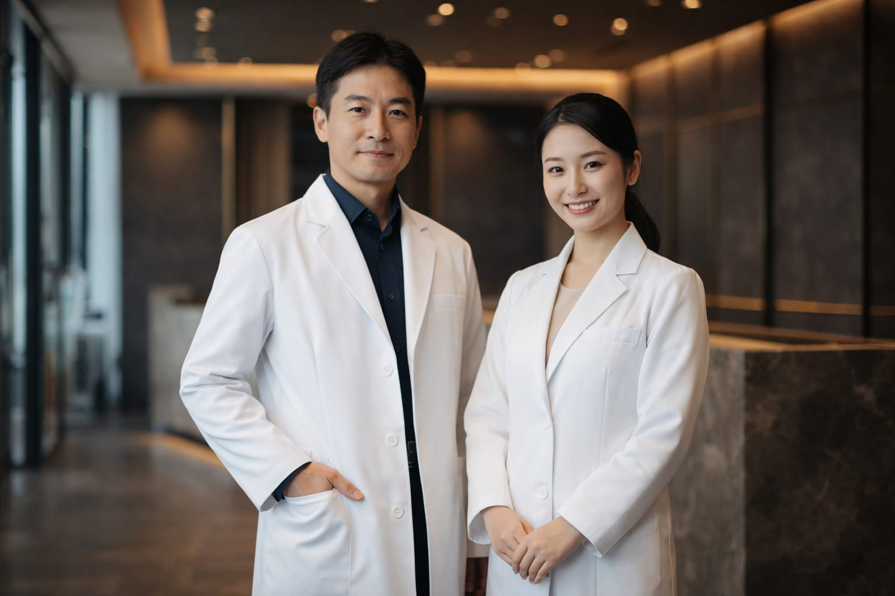

DOCTORS
Our Doctors
Board-certified specialists in plastic surgery and aesthetic dermatology, providing personalized treatment for every patient.
"The essence of beauty lies in harmony."
Proven expertise, sincere dialogue.
At Aoki Beauty Clinic, we do not pursue a one-size-fits-all standard of beauty. Instead, we seek to enhance each patient's unique beauty, taking into account their bone structure, skin quality, and lifestyle. Our physicians combine the precision of reconstructive surgery with the refined aesthetic sensibility of cosmetic medicine, providing consistent care from consultation through treatment and follow-up.
DIRECTOR
Seiichi Aoki, M.D.
(青木 誠一)
Director, Aoki Beauty Clinic
After 10 years of training in reconstructive and aesthetic surgery at a university hospital's plastic surgery department, Dr. Aoki went on to perform over 2,000 procedures per year at a major aesthetic clinic group. Specializing in rhinoplasty and eyelid surgery, his cumulative record exceeds 15,000 cases.
"In aesthetic surgery, millimeter-level decisions determine the outcome. I always strive to balance anatomical precision with what constitutes 'natural beauty' for each individual patient."
In 2020, he founded Aoki Beauty Clinic. By combining the safety standards rooted in plastic surgery with attentive consultations tailored to each patient's goals, the clinic maintains a return rate of over 85%.
CAREER
Graduated from University of Tokyo School of Medicine
Joined Plastic Surgery Department, University of Tokyo Hospital
Board Certified, Japan Society of Plastic and Reconstructive Surgery
Joined a major aesthetic clinic group as Chief Physician
Board Certified, Japan Society of Aesthetic Surgery (JSAPS)
Achieved 2,500 procedures per year
Founded Aoki Beauty Clinic
QUALIFICATION
- Board Certified, Japan Society of Plastic and Reconstructive Surgery
- Board Certified, Japan Society of Aesthetic Surgery (JSAPS)
- Member, Japan Society of Cranio-Maxillo-Facial Surgery
- Member, Japanese Society of Anti-Aging Medicine
- Certified Botox Vista® Injector
- Certified Juvederm Vista® Injector
VICE DIRECTOR
Misaki Shiraishi, M.D.
(白石 美咲)
Vice Director, Aoki Beauty Clinic
After practicing as a board-certified dermatologist at a university hospital, Dr. Shiraishi transitioned to aesthetic dermatology. She has performed over 8,000 procedures, primarily in laser and injectable treatments.
"The skin reflects one's entire way of living. My goal is not simply to erase spots or wrinkles, but to elevate overall skin texture so that patients can feel truly confident in their own skin."
When it comes to injectables, she adheres to the principle of "the art of restraint," and is highly regarded for delivering natural-looking results. While actively incorporating the latest advancements in aesthetic medicine, she provides only evidence-based, safe treatments.
CAREER
Graduated from Keio University School of Medicine
Joined Dermatology Department, Keio University Hospital
Board Certified, Japanese Dermatological Association
Joined an aesthetic dermatology clinic
Achieved 1,200 laser treatments per year
Appointed Vice Director, Aoki Beauty Clinic
QUALIFICATION
- Board Certified, Japanese Dermatological Association
- Member, Japanese Society of Aesthetic Dermatology
- Member, Japan Society for Laser Surgery and Medicine
- Member, Japanese Society of Anti-Aging Medicine
- Certified Botox Vista® Injector
- Certified Juvederm Vista® Injector
Qualification
2 board-certified
specialists in plastic surgery
& dermatology
Track Record
Over
23,000+ cases
since opening
Clients
Consultation
return rate over
85%

Reservation
Free Consultation Directly with Our Doctors
The Director and Vice Director personally conduct all consultations.
Share your concerns and goals with us.
Hours: 10:00 - 19:00 (Closed Wednesdays & Holidays)